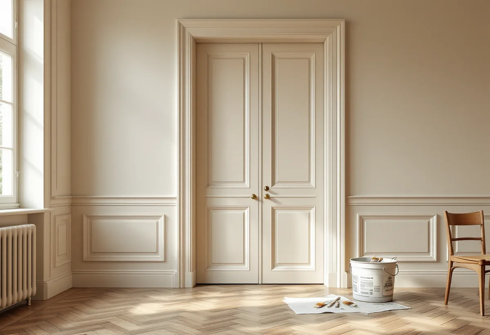

Genomgång av snickerierna
Vi tittar på dörrar, foder, lister och fönster och ser vilken färg som sitter där.
I Vasastans lägenheter är det ofta snickerierna som berättar mest om huset: höga dörrar, breda foder och fönster med två bågar. Geal Entreprenad AB målar snickerier, väggar och tak i Vasastan och väljer metod efter vad som redan sitter på ytan, inte efter vad som går fortast.
Översiktsplanens text om riksintresset tar upp flera miljöer i Vasastan. Kvarteren Motorn och Vingen i norra Vasastaden uppfördes i slutet av 1910-talet som ett tidigt exempel på kooperativt byggande med kommunalt stöd, med målet att ge goda bostäder till rimliga priser i omsorgsfullt gestaltade miljöer. Stadsmuseets byggnadsinventering av nordvästra Vasastaden berättar att stadsbyggnadsdirektören Hallman tog fram en gaturegleringsplan för Röda Bergen 1909. I översiktsplanen beskrivs Röda Bergen som innerstadens största miljö som helt präglas av 1910- och 1920-talens stadsbyggnadsidéer, där husen följer terrängen och planen till och med reglerade var prydnadsgavlarna skulle sitta.
Runt Observatoriekullen ligger stadens gamla högskoleområde med bland annat Handelshögskolan från mitten av 1920-talet och Stadsbiblioteket från 1928. Den klassiska stenstaden räknar översiktsplanen från 1870 till 1930. Ett hus från den perioden är i dag mellan knappt hundra och drygt hundrafemtio år gammalt, och dörrar, foder och fönster kan ha målats om flera gånger med olika färger.

Enligt Riksantikvarieämbetet var linoljefärg den helt dominerande färgtypen för snickerier, inredningar och möbler ända in på 1950-talet. Statens fastighetsverk tillägger att man under första halvan av 1900-talet ofta blandade alkydhaltig topplack i linoljefärgen för att få blankare ytor. Ren linoljefärg har en egen karaktär: penseldragen syns i den färdiga ytan, och vit färg kan gulna i rum utan dagsljus. Gulningen försvinner igen efter ett par månader i dagsljus.
Handboken beskriver normalbehandlingen när snickerier som redan bär linoljefärg ska målas om: sodatvätt, uppskrapning av lös färg, islagning av spikar, grundning av de skrapade partierna, i- och påspackling av skador, slipstrykning och färdigstrykning. Tvätten är mycket viktig, eftersom den har avgörande betydelse för hur väl den nya färgen fäster på den gamla. På äldre ytor som inte har spacklats tidigare bör man enligt handboken inte börja spackla.
Ett fönster med två bågar har flera målade sidor, och de kan höra till olika ansvar. Skatteverket ger rotavdrag i en bostadsrätt för att måla insidan av fönster, men inte för att arbeta mellan bågarna eller på utsidan. Vem som underhåller vad står i föreningens stadgar. Är det föreningen som ansvarar för fönstren kan utsidan och mellanrummet målas i ett gemensamt projekt för hela huset, medan insidan kan vara din.
Riksantikvarieämbetet påpekar att fönster behöver målas om oftare än fasaden i övrigt och att kittet ska vara helt så att fukt inte tränger in i träet. Ytterbågens insida, alltså den sida som vetter mot mellanrummet, bör enligt handboken strykas med utomhusfärg. När vi målar insidan av bågarna i en lägenhet tittar vi därför också på kittet och säger till föreningen om något på utsidan behöver åtgärdas.
Från slutet av 1800-talet till mitten av 1900-talet användes linoljebaserad spackelfärg vid slätspackling. Statens fastighetsverk skriver att linoljespackel tenderar att släppa från underlaget och spricka upp efter 75–100 år, oavsett hur gott hantverket var, och att skadan därför är vanlig i byggnader från den tiden. För ett hus från 1920-talet har den tiden nu gått, och fina sprickor i ett mönster på väggen kan ha just den förklaringen.
Löst spackel skrapas bort tills underlaget är fast, och skadan spacklas upp i tunna lager. Ett helt rum spacklas inte om i onödan. Hur samma putsväggar förbereds för ny tapet beskrivs under tapetsering i Vasastan, och vill du se golven slipas samtidigt finns golvläggare i Vasastan. Mer om målning i stort finns på sidan om målare.
Vi tittar på dörrar, foder, lister och fönster och ser vilken färg som sitter där.
Vi reder ut vilka delar av fönstren och dörrarna som är ditt ansvar.
Snickerier, väggar och tak prissätts var för sig, och delar som ger ROT är markerade.
Snickerierna tvättas och lös färg och löst spackel skrapas bort.
Bara skadorna spacklas, sedan slip- och färdigstrykning.
Vi går igenom dörrar och fönster med dig när färgen har torkat.
För en bostadsrätt i Vasastan ger Skatteverket rotavdrag för att måla innerdörrar, insidan av lägenhetsdörren och fönstrens insida, och för tak, väggar och element. Arbete mellan fönsterbågarna, på utsidan och i trapphuset ger inget avdrag, och åtgärden ska vara något som stadgarna lägger på dig.
Avdraget är 30 procent av arbetskostnaden, med ett tak på 50 000 kr per person och år för rot och 75 000 kr för rot och rut sammanlagt. Färg och resor ger inget avdrag. Avdraget dras på vår faktura.
Antalet dörrar, foder och fönsterbågar, hur mycket färg och spackel som har släppt, takhöjden och om ytorna ska målas med linoljefärg eller annan färgtyp påverkar kostnaden. Du får ett skriftligt kostnadsförslag efter ett kostnadsfritt besök.
Fasad, fönster och invändig målning.
Målare i Stockholm →Flytta badrummet, ny stam och frånluft.
Badrumsrenovering i Vasastan →Springor, kupning och underhåll.
Golvläggare i Vasastan →Ny tapet på gamla putsväggar.
Tapetsering i Vasastan →